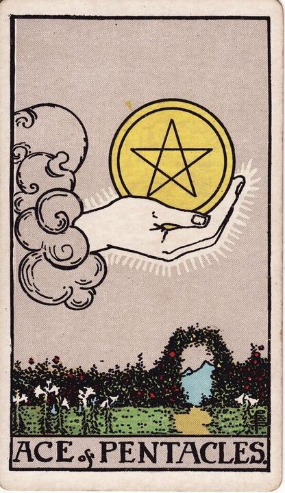
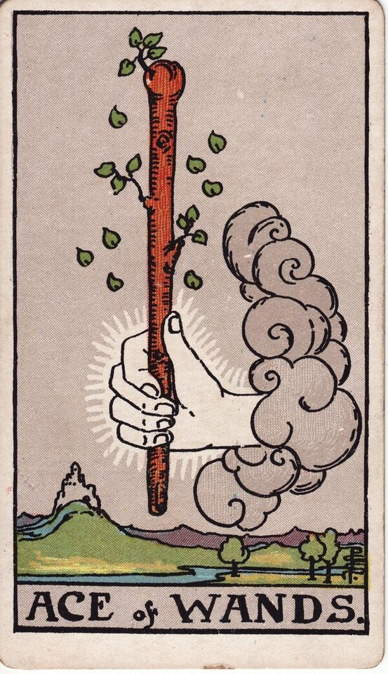
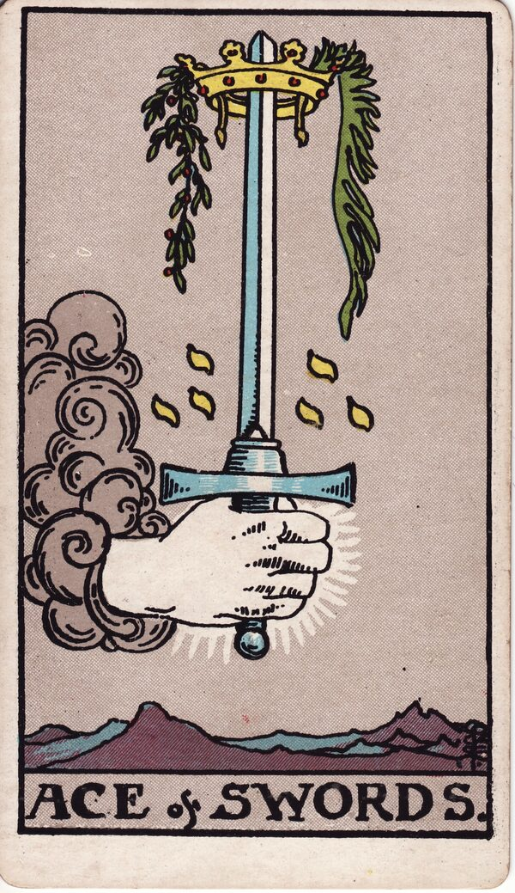

Trusted by thousands of callers nationwide
Minor Arcana Tarot Card Meanings - All 56 Cards & 4 Suits
The Minor Arcana tarot card meanings cover the texture of daily life - the people, choices, and influences around your question. Want the cards read for your situation? Every reader on our line is hand-vetted - connect in under 60 seconds, $1 for your first minute, hang up anytime.
- Hand-vetted readers
- Available 24/7
- Hang up anytime

What Is the Minor Arcana?
After the 22 Major Arcana, the remaining 56 cards of a tarot deck are the Minor Arcana - they address the details of daily life. Where the Major Arcana points to the big forces shaping your path, the Minor Arcana fills in the everyday particulars: the conversation, the bill, the argument, the opportunity, the people around you. The Minor Arcana is divided into four suits, each with 14 cards including the court cards.
Call (888) 920-6662 - Intro rate $1/min
The Four Suits of the Minor Arcana
Tap any suit for the full meaning of all 14 of its cards - Ace through Ten plus the four court cards:

Wands
Fire - energy, ambition, creativity, and drive.
Meanings →
Cups
Water - emotions, love, feelings, and connection.
Meanings →
Swords
Air - the mind, conflict, decisions, and truth.
Meanings →Pentacles
Earth - money, work, home, and material matters.
Meanings →
What the Numbers Mean (Ace to Ten)
Within every suit, the numbered cards follow a story arc that repeats in each element:
Ace
A new seed of the suit's energy - pure potential.
Two & Three
First choices, partnerships, and early growth.
Four & Five
Stability, then disruption, loss, or conflict.
Six & Seven
Recovery and movement, then assessment and challenge.
Eight & Nine
Mastery building, then near-fulfillment or strain.
Ten
The full completion of the suit's theme - for better or worse.
The Court Cards
Each suit ends with four court cards - Page, Knight, Queen, and King. They often represent people in your life, or aspects of yourself, expressed through that suit's element. The Page is the learner and the message; the Knight is action and pursuit; the Queen is mature, inward mastery; the King is mature, outward authority. A skilled reader will tell you whether a court card is a person, a part of you, or an energy to embody.
Major Arcana vs. Minor Arcana
A tarot deck has 78 cards. The 22 Major Arcana represent major life themes and turning points - the bigger forces shaping your path. The 56 Minor Arcana cover the day-to-day details around your question. When the Major Arcana dominates a spread, the reading is about the big picture; when the Minor Arcana leads, it's about the everyday particulars. The two are read together. You can also read more about the Minor Arcana for background.
What Do I Do If My Reading Is Mostly Minor Arcana?
It usually means the situation is in your hands. A spread heavy with Minor Arcana points to everyday matters and choices you can actually influence - not fated turning points. That's good news: it means the next move is yours. Rather than decode a list of cards alone, a live reader can tell you how the suits and numbers interact for your question and what to do with it. Browse every reading type on our phone psychic readings hub if you're not sure where to start.
Want the Cards Read for Your Life?
A meanings list is the map; a live reading is the territory. We'll connect you with the right hand-vetted tarot reader in under 60 seconds. $1/min first call · 15 minutes for $10 · hang up anytime · 100% satisfaction promise.
Call (888) 920-6662 NowWhat Callers Say About Their Tarot Reading
"She read the everyday cards and pinpointed the exact work situation I was stuck in - then told me the practical next step. I write down every nugget from these calls."
"If you're thinking about booking a reading: do it. Every time I've called - unsure, mid-change, or just needing guidance - I got exactly what I needed. Nothing but clarity."
Explore every reading type on our phone psychic readings hub, see the Major Arcana meanings, or start a phone tarot reading now.
Minor Arcana - Frequently Asked Questions
What is the Minor Arcana?
The 56 cards that cover the details of everyday life - the day-to-day influences around your question - split into four suits.
How many Minor Arcana cards are there?
56 - four suits of 14: Ace through Ten plus Page, Knight, Queen, and King.
What do the four suits mean?
Wands: energy and drive (fire). Cups: emotion and love (water). Swords: mind and conflict (air). Pentacles: money and material life (earth).
What's the difference between Major and Minor Arcana?
A deck has 78 cards. The 22 Major Arcana cover major life themes; the 56 Minor Arcana cover day-to-day influences.
What does a reading full of Minor Arcana cards mean?
Usually that the situation is everyday and within your influence - the next move is yours.
Can I get a Minor Arcana reading by phone?
Yes - hand-vetted readers are available 24/7. First-time callers pay $1/min, or 15 minutes for $10, and you can hang up anytime.
Get Your Tarot Reading Now
Here's what happens when you call: you're connected to a hand-vetted reader in under 60 seconds, they pull the cards on your question, and you hang up with real clarity.
- Hand-vetted reader
- Connected in under 60 seconds
- $1/min first call · 15 min for $10
- Hang up anytime
- 100% satisfaction promise